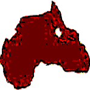

∞ ⋈ ∞ ⋈ ∞ ⋈ ∞ ⋈ ∞ ⋈ ∞ ⋈
Africahead
Investors can contact the current representative for Africahead, if they want to invest in Africahead equity. Download the proposal for a private placing of equity.
TERMS: BUYING A VIRTUAL TOKEN AND PART OF THE AFRICAHEAD BRAND
The 🌍 Africahead Ipparts (AFA) Initial Token Offering (ITO) over-the-counter sale is currently taking place.
🌍 Africahead Ipparts (AFA) Ethereum Contract Address:
0xfB48E0DEa837f9438309a7e9F0cFe7EE3353A84e
Download the blue .png AFA logo or use this link for the logo.
Download the red .png AFA logo or use this link for the logo.
Download the blue .svg AFA logo or use this link for the logo.
Download the red .svg AFA logo or use this link for the logo.
Currently Africahead pays commission, to anyone, within the law, of 50/100 on small sales of AFA. Anyone who sources a buyer can arrange for receipt of the commission.
The value the market places on AFA, is a reflection of customers' appreciation of the brand. Therefore, equity:intequity owners and employees will not hold AFA. They determine the benefit customers get from using Africahead products and services. 25'000 AFA was made available for the ITO. Part of the authorised AFA is held in trust for future use. The total authorised AFA are 480'000 tokens. 455'000 AFA are held in trust. The balance of 25'000 AFA, not issued, are also held in trust, until issued.
15 October 2018, the first AFA were sold. The sale triggered the cession mentioned in the White Paper dated 12 October 2018. The White Paper of the said date is therefore the official governing agreement among AFA holders, equity:intequity holders and Moiom CC transacting as Africahead. 48% of the Africahead brand value, will be represented by the issued AFA, when 500'000 USD value will have been raised or 25'000 AFA will have been issued, whichever happens first, according to the agreement. The price of AFA will be increased as time goes on, until the amount is raised, in order to benefit earlier buyers.
The brand value is represented primarily by:
| = Goodwill represented in copyrights on Intequinism, the foundation of Africahead, |
| = Copyrigths on the Africahead transacting mark, consisting of the map image of Africa, combined with the word Africahead, |
| = Ipparts Exchange (IPPAEX), |
| = Moyom (MYM) utility token, |
| = The fonetones website. [Take note: Subsequent to the start of the AFA issue, it was decided to form a separate fonetones (FON) brand token and list it on Ipparts Exchange (IPPAEX). It was done because, having a separate FON brand token will benefit the AFA brand tokens more than not having a FON brand token.] |
| = Other copyrights not mentioned (Refer to the White Paper). |
NB: Investing in AFA is a longterm investment. AFA should not be bought with retirement savings or for short term profit.
Signed White Paper
Team
Highlights of ITO:
48% of the Africahead brand value shall never be sold in another form than 🌍Africahead Ipparts (AFA), according to the legal agreement in the White Paper, because AFA is backed by the 48%. That means partly, the copyrights owned by Africahead, will be managed, partly, on behalf of AFA holders, whilst considering, maximum royalties are not the prerogative. AFA holders do not have a right to royalties, in the form of dividends. They own 48% of the asset's value, which must be maximised, according to the economic theory of Intequinism.
Capital to raise: 500'000 USD value.
Tokens; may issue: 25'000 AFA = 2'500'000 ipparts.
Initial Price per token: 25 USD-value/AFA = 0.25 USD value per ippart.
Current and Future issue prices: The issue prices increase to give buyers who see the logic first, most benefit.
Duration of ITO: Until "the event" takes place. "The event" will be the issue of 25'000 AFA or the instant when 500'000 USD value will have been raised, which ever happens first. If Africahead can raise 500'000 USD value whilst issuing less than 25'000 AFA, it will.
Know your client (KYC) rules do not apply, because it cannot apply on Decentralized Exchange Counters where AFA is sold. Knowing who buyers of AFA will sell to in the future is impossible. FICA rules apply at cash sales.
Planned use of capital raised:
| (1) Repay around 42'000 USD value, founding intequity (capital of ideas) to the current equity owner/founder. It is not debt. Africahead may not borrow. The only capital allowed are equity, intequity, and AFA. Refer to the White Paper to comprehend the capital view, influenced by the philosophy Intequinism. |
| (2) Salaries to form a team. |
| (3) Developing ipparts further and developing a Decentralized Ipparts Exchange on the Ethereum Network, 'utilizing' the economic theory of Intequinism. The Exchange will raise capital for startup businesses by listing/selling brand tokens, backed by goodwill and copyrights. [Insert: Ipparts Exchange (IPPAEX) is currently run on other available exchanges. When enough capital has been raised, an own exchange platform, as well, will be formed. |
| (4) Expanding and developing the business of Africahead in publishing. The websites africahead.co.za and fonetones.github.io will be developed further. The philosophy called Intequinism, which is currently a main product of Africahead, will be marketed. |
| (5) Depending on the amount raised, the formation of another crypto-currency token on a fast network will be considered. This token will be a utility token, being solely money, without backing by assets. The Supply/Demand theory will be more relevant than at ipparts. Development will therefore be more capital intensive. [Insert: After the issue of AFA started, Moiom (MIM), ERC20 utility token, on the Ethereum network, was formed. Development of MIM was discontinued and replaced with Moyom (MYM), which has more suitable contract coding, than MIM, for utility currency functionality. More information at the MYM webpage.] |
| (6) Funding Federal Party SA - FPSA, a new political party in South Africa, with maximum R 1'000'000 (ZAR) for marketing. [Insert: FPSA could not contest the 2019 elections, due to a lack of funding. The R 1'000'000 (ZAR) stays applicable and will be used for future elections. The next nationwide elections are 2021, for municipal governments. Divided Party (DiP) tokens are also issued on Ipparts Exchange (IPPAEX), to fund FPSA.] |
| (7) Africahead must become a big business. The capital will be used to develop the Africahead brand for diversified business, with Intequinism. |
| (8) If any capital is not used directly, Africahead will invest conservatively. Investments in certain new ventures are deductible for taxation in South Africa. Such investments will be considered, if new capital is not used by Africahead's own projects. |
Africahead is not a developer of blockchain technology. Africahead uses the best available blockchain infrastructure available, to attain its goals.
Links to the Exchange Counters:
Open orders to sell AFA, are at: BookingOrdersSellAFA.html.
How does the over the counter (OTC) sale work? 480'000 🌍 Africahead Ipparts (AFA) ERC20 tokens, which equal 48’000’000 ipparts, were authorised and registered on the Ethereum network. Each AFA token has 2 decimal places. Each 🌍 Africahead Ipparts (AFA) token consists of 100 ipparts. Tokens not issued are held in trust by Africahead to raise capital currently and in the future. During future Token Offerings the holders of AFA at that time will have options to buy newly issued AFA first. For the ITO, 25'000 tokens are available. When 500’000 USD value will have been raised or 25'000 AFA issued, whichever happens first ("the event"), the sale will close. The AFA white paper includes the commitment; future issues of AFA, after this initial offer, will be done in a similar way than a rights offer on a stock exchange. That means holders of AFA at the time will get an option to first buy AFA, according to the new issue, to protect them against dilution during future issues.
Brand values are arbitrary. This sale will help to establish a market value for the Africahead brand. At the time of "the event", the issued AFA will represent 48% of the brand value. Discounts will be considered for large amounts. The remaining 52% of the brand value is not represented by AFA. It remains the property of equity holders of Africahead.
View the tokens at the Ethereum Contract Address:
0xfb48e0dea837f9438309 a7e9f0cfe7ee3353a84e.
Remove the space in the address.
The websites
https://bloxy.info,
https://ethplorer.io,
https://etherscan.io and
https://www.etherchain.org for example,
supply information about the Ethereum network.
Ipparts refer to the indivisible subunits of AFA. 1 AFA token is equal to 100 Intellectual Property
Parts (ipparts) of AFA.
AFA is an asset backed token, but it can not be classified as a “security” for purposes of the law because the value of AFA is not correlated positively with, book value of equity, profits, interest, fixed assets and debt, as is the case with “securities”. Africahead may not borrow. Values representing the brand value of Africahead may not be capitalized on its balance sheet, without being sold, according to International Accounting Standards. Those assets, representing the brand, which may not be capitalized without selling it, back AFA. Comparing a listed company on a stock exchange, the relevant value, backing AFA, is the difference between net asset value (book value of equity) per its balance sheet, and market capitalization of issued/traded shares.
Goodwill, copyrights (especially on the Africahead mark and Intequinism) and transacting mark values are the most important determinants of the value of the Africahead brand. An inverse relation exists between values of the brand and profit, Africahead makes out of customers. The less cash Africahead draws, from customers, for products and services, the more cash is left in the pockets of customers, and the more valuable the Africahead brand is. Mainstream capitalist economic theory teaches a positive correlation between profits and brand values exists. The theories use discounted dividends, to determine brand values, in calculations, but dividends are not relevant at AFA's new-capitalist token economics.
Learn about blockchains and virtual currencies whilst buying Africahead test tokens (AFA) with test Ether (ETH) on the Ropsten Ethereum test network.
Contact details:
Tel: +27(0)824477125
Email: africahead2@gmail.com or mdpienaar@africahead.co.za.
Chat: Africahead lobby at https://gitter.im or Telegram Chat Group or WhatsApp.
Telegram News - not for chatting.
Other social media profiles.